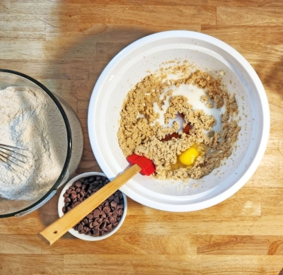
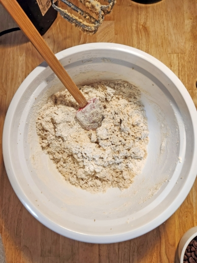
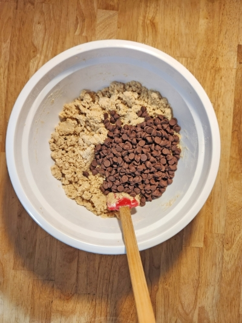
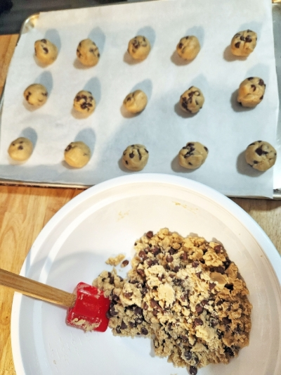

I spent a long time chasing the perfect cookie—soft and chewy in the center with that tiny, satisfying crunch on the edges. After more failed batches than I care to admit, I finally found the one. Now my family won’t accept anything less the second they hear me preheating the oven.
Gather all your ingredients. Preheat oven to 325°F, and line a pan with cookie sheet parchment paper.
Sift together dry ingredients in a bowl and set aside.
With a hand or stand mixer, cream together sugars and butter.
Then add milk, vanilla, and egg. Mix by hand until well blended, but avoid overmixing.
Add dry ingredients and mix together by hand until all flour is just about dissolved.It will look crumbly.
Then add the chips and continue hand mixing them in until fully incorporated.
Tip: Over-mixing any type of flour mixture for cakes and cookies leads to a denser baked good.
You can chill the dough in the fridge until later use. If using the right way, roll into golf ball-sized balls, and spread them an inch apart. This dough doesn’t spread like others because it’s drier, which helps it stay chewy. You can keep them like this for smaller, fatter cookies or lightly flatten them for wider cookies.
Bake for 10 mins and check if cookies are no longer shiny. These won’t brown very much. I never let them go longer than 13 minutes.
Soft, chewy, and loaded with gooey chocolate chips — these cookies are a family favorite! Perfect with a glass of milk or a cup of coffee.
Makes about 2 dozen